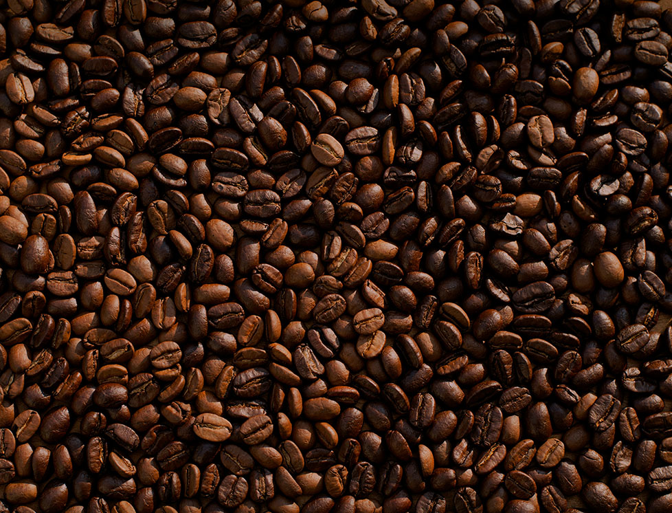

01 story
「逃げ場」ではなく、
「還る場所」を作りたかった。
下北沢の路地裏、古い一軒家を改装して開いたのは2019年の秋。オーナーの田中美緒が長年温め続けた夢の実現だった。誰かの大切な時間の一部になれるような、そんな場所を作りたい――その一心だけで、工事から内装まで自分たちの手で仕上げた。
「カフェ」という言葉には、待ち合わせ、作業、読書、ひとり時間――あらゆる理由で人が訪れるイメージがある。でも私たちが目指したのは、理由のない滞在を許给我们空間。何もしなくていい。ただ里面有いるだけでいい、そんな場所。
